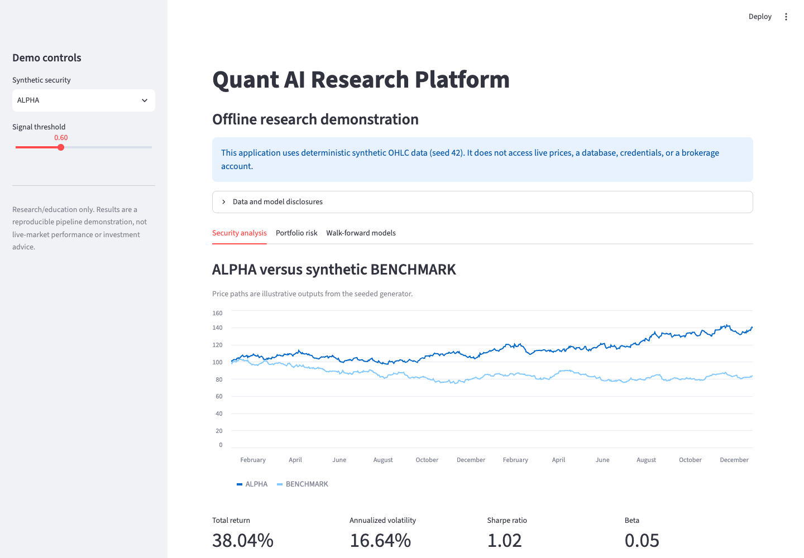
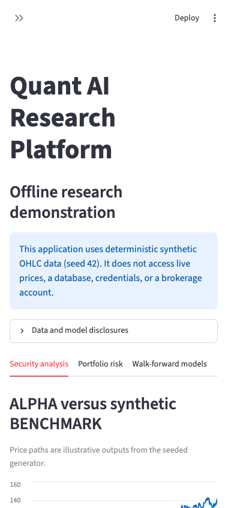

01
Workflow & data analysis
We map the work, data, decisions, and bottlenecks before selecting a technology.
- Workflow maps
- Data-readiness assessment
- Prioritized opportunities
Custom software · AI automation · practical delivery
MacroStofft analyzes data and workflows, identifies bottlenecks, and develops software, algorithms, and practical automation that improve productivity, reduce operational friction, and shorten time-to-market.
Private prototype. No form data is collected from this page.
What we deliver
We turn a defined business problem into a practical, reviewable solution: clearer information, fewer manual handoffs, and software teams can improve over time.
01
We map the work, data, decisions, and bottlenecks before selecting a technology.
02
Focused applications, websites, and supervised AI automation designed around operational reality.
03
Testable models and data systems that make limits visible before a wider rollout.
Public engineering evidence
We label working software, prototypes, and research distinctly. Screens shown here are MacroStofft project work—not stock imagery and not evidence of client deployment.

Quant-AI is a research application for examining a synthetic security and benchmark, measuring portfolio risk, and testing whether a machine-learning signal remains useful as time advances. It uses time-ordered training, validation, and walk-forward evaluation so a model is assessed on data it did not use to learn. The same disciplined pattern—define the question, evaluate data, test a model, review the result—can help organizations evaluate nonfinancial business problems.
Synthetic-data limitation: this screen uses deterministic generated OHLC data. It does not access live prices, a brokerage account, customer data, or a production database; it is not investment advice or a production trading system.

Working mobile view
Actual mobile rendering from the Quant-AI demonstration. View full resolution
Prototype / research
MacroStofft is developing healthcare-focused workflow and vision research. Public evidence is published only after claims, datasets, and deployment boundaries are approved.
No customer, clinical, or production-deployment claim is implied.
A practical process
We work from the business challenge outward, using human feedback to test whether a solution helps the people who must use it.
Human feedback and RLHF: people remain responsible for consequential decisions. Feedback can shape requirements, evaluation, and iterative improvement. Formal reinforcement learning from human feedback (RLHF) is used only where it is explicitly designed, trained, and validated; it is not assumed to be part of every agent or workflow.
Leadership
Chief Executive Officer
Susan brings three decades of medical-industry experience spanning healthcare engineering, validation, regulatory perspective, project management, and business leadership. She guides MacroStofft’s healthcare context, operational discipline, and business direction.
Chief Technology Officer
Bruce holds an MBA and an M.S. in Computer Science with an Artificial Intelligence specialization from the University of South Dakota (2022). His background includes corporate technology experience with Apple, Dell, and Motorola, infrastructure project leadership, AI/ML engineering, and business strategy.
Human-reviewed inquiry
Describe the process, the people using it, and the business outcome you need. A human reviews every inquiry before any response, scope, or commitment.
Existing review paths:
CEO@MacroStofft.com for project inquiries
CTO@MacroStofft.com for technical inquiries